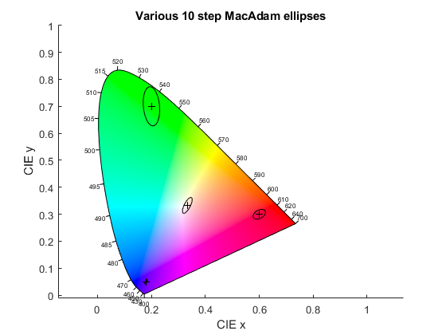

MacAdamEllipse
Navigate to: Home | Alphabetic list | Grouped list | Source code: MacAdamEllipse.m
Compute points and parameters of a MacAdam Ellipse
Contents
Syntax
[ell, g, a, b, theta_deg] = MacAdamEllipse(x, y, nstep, npoints)
Input Arguments
- x: scalar double. CIE 1931 x coordinate of center point
- y: scalar double. CIE 1931 y coordinate of center point
- nstep: scalar double. Must be positive. Size scale factor of the ellipse. nstep == 1 for "just noticeable"
- npoints: scalar double. Must be positive and integer. The number of points to sample the ellipse
Output Arguments
- ell: (2 x npoints) array of double. The ellipse points. First/second column: x/y values
- g: 3x3 array of double. The 3 x 3 X-Y-Z tristimulus ellipsoid matrix; only 2x2 are meaningful
- a: scalar double. First half axis of 1-step ellipse
- b: scalar double. Second half axis of 1-step ellipse
- theta_deg: tilt angle of half axis a in degrees.
Algorithm
Algorithm follows Chickering, K. D. „Optimization of the MacAdam-Modified 1965 Friele Color-Difference Formula“. JOSA 57, Nr. 4 (1. April 1967): https://doi.org/10.1364/JOSA.57.000537. and Chickering, K. D. „FMC Color-Difference Formulas: Clarification Concerning Usage“. JOSA 61, Nr. 1 (1. Januar 1971): 118. https://doi.org/10.1364/JOSA.61.000118. Thanks go to John Selverian of OSRAM for his helpful hints in his OSRAM Color Calculator app.
See also
MacAdamEllipse_g, CIEDE2000_Lab, CIEDE2000_XYZ
Usage Example
function ExampleMacAdamEllipse() %% plot ellipses of various step sizes figure();clf;hold on; x = 0.333; y = 0.333; scatter(x,y,'x'); for steps = [1,3,5,7,9] ell = MacAdamEllipse(0.333, 0.333, steps, 100); ell(1:2,end+1) = ell(1:2,1); % close loop plot(ell(1,:), ell(2,:)); end axis equal; xlabel('CIE x'); ylabel('CIE y'); title('MacAdam ellipses, 1,3,5,7,9 step'); % compute all the parameters for a step 10 ellipse [ell, g, a, b, theta_deg] = MacAdamEllipse(0.333, 0.333, 10, 100); % compute the MacAdam distance of some point on this 10 step ellipse, which should be 10 xy9 = ell(:,3); % some point on a 10 step ellipse scatter(xy9(1), xy9(2), '+'); plot([x, xy9(1)], [y, xy9(2)],'--'); dxy = xy9 - [x;y]; dev = sqrt(dxy' * g(1:2, 1:2) * dxy); % g(1:2,1:2) is the matrix of the quadratic form for this distance fprintf('The "MacAdam distance" of an xy color point to a reference color point can be computed using the ellipse matrix g\n'); fprintf('See dashed line. Here, it should be 10, and it is %g\n',dev); % plot the major and minor half axes of the 9 step ellipse theta_rad = theta_deg * pi / 180; % angle in radians xy_a = [x,y] + 9 * a * [cos(theta_rad), sin(theta_rad)]; xy_b = [x,y] + 9 * b * [cos(theta_rad + pi/2), sin(theta_rad + pi/2)]; plot([x, xy_a(1)], [y, xy_a(2)]); plot([x, xy_b(1)], [y, xy_b(2)]); % plot a bunch of 10 step ellipses fh = figure(); clf; hold on; PlotCIExyBorder('Figure',fh,'ColorFill',true); axis equal; xy = [ 0.333, 0.333; % white 0.18, 0.05; % blue 0.6, 0.3; % red 0.2, 0.7]; % green for i = 1 : size(xy,1) ell = MacAdamEllipse(xy(i,1), xy(i,2), 10, 100); scatter(xy(i,1), xy(i,2),'+k'); ell(1:2,end+1) = ell(1:2,1); % close loop plot(ell(1,:), ell(2,:),'k'); end xlabel('CIE x'); ylabel('CIE y'); title('Various 10 step MacAdam ellipses'); end
The "MacAdam distance" of an xy color point to a reference color point can be computed using the ellipse matrix g See dashed line. Here, it should be 10, and it is 10